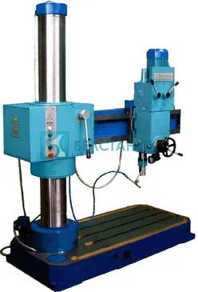
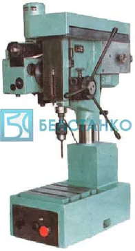
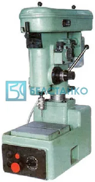
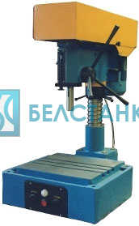
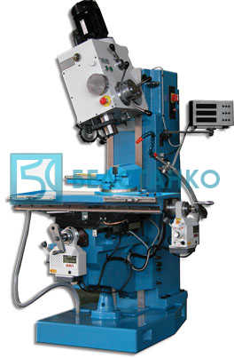

Z5140B
Вертикально-сверлильный станок
1 140 000 ₽Вертикально-сверлильный станок
1 140 000 ₽
Вертикально-сверлильный станок
2 430 000 ₽
Вертикально-сверлильный станок
2 598 000 ₽

Станок настольно-сверлильный
Цена по запросу
Станок настольный сверлильно-фрезерный
Цена по запросу
Радиально-сверлильный станок
2 735 868 ₽
1330-01 Станок вертикально-сверлильный настольный
Цена по запросу1330-03 Станок вертикально-сверлильный настольный
Цена по запросу
445-01 Станок настольно-сверлильный
Цена по запросу
Настольно-сверлильный станок
Цена по запросу
Вертикально-сверлильный станок
948 000 ₽

Станок настольно-сверлильный
261 000 ₽
Станок специальный сверлильный
Цена по запросу
Вертикально-сверлильный настольный станок
Цена по запросу

Сверлильно-фрезерный станок
Цена по запросу
Сверлильно-фрезерный станок
Цена по запросу
С УЦИ (СФ32-05) Станок сверлильно-фрезерный
Цена по запросу
Станок сверлильно-фрезерный
Цена по запросу